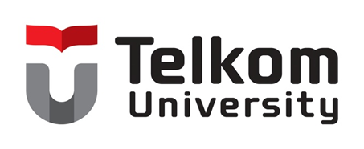

|
 |
DIHAPUSKAN SESUDAH ................ TAHUN |
| SUB UNIT | : | Aktivitas Kemahasiswaan Universitas Telkom Kampus Purwokerto | AGENDA NO. |
| UNIT ORGANISASI | : | Akademik dan Riset Universitas Telkom Kampus Purwokerto | DIKIRIM TANGGAL : |
| KONSEPTOR | : | Yossika Putra Erlangga | MENGETAHUI OLEH : |
| DIKETIK / DIKERJAKAN | : | Salumita Ardiana | |
| DIPERIKSA OLEH | : | Kadarisman, S.Si. | |
| NOMOR | : | 001/0002/A.1/PRD.1/HIPMI-TUP/V/2026 | Purwokerto, 20 Mei 2026 |
| DITETAPKAN | : |
Direktur Telkom University Purwokerto Dr. Tenia Wahyuningrum, S.Kom., M.T. |
Kepada Yth : Direktur Telkom University Purwokerto Perihal : Proposal Kegiatan Musyawarah Besar (MUBES) HIPMI PT Telkom University Purwokerto Tahun 2026 |
| SEBELUM DITETAPKAN | : |
Wakil Direktur Bidang Akademik dan Riset Dr. Catur Nugroho, S.Sos., M.I.Kom. |
| Kepala Urusan Sekretaris Pimpinan, Legal dan Public Relation Silvia Van Marsally, S.E., M.M. | Kepala Urusan Kemahasiswaan, Karier dan Alumni Kadarisman, S.Si. | Pembina HIPMI PT TUP Kurnia Indah Sumunar, S.E., M.S.Ak |
| Ketua HIPMI PT TUP Raden Aurel Aditya Kusumawaningyun | Ketua Panitia MUBES Yossika Putra Erlangga | Sekretaris Panitia MUBES Salumita Ardiana |
| Berkas Kembali Pada Unit : Kemahasiswaan Universitas Telkom Kampus Purwokerto | Lampiran : 5 (Lima) Berkas | |
PROPOSAL KEGIATAN
MUSYAWARAH BESAR (MUBES) TAHUN 2026
|
|
PANITIA MUSYAWARAH BESAR (MUBES) TAHUN 2026
HIMPUNAN PENGUSAHA MUDA INDONESIA
TELKOM UNIVERSITY PURWOKERTO
Jalan D.I. Panjaitan No. 128, Kec. Purwokerto Selatan, Banyumas 53147
Email: hipmitelkompurwokerto@gmail.com
|
|
PROPOSAL KEGIATAN MUSYAWARAH BESAR (MUBES) 2026
UKM HIPMI PT TELKOM UNIVERSITY PURWOKERTO
1. Nama Kegiatan
Nama kegiatan ini adalah Musyawarah Besar (MUBES) Himpunan Pengusaha Muda Indonesia (HIPMI) Perguruan Tinggi Telkom University Purwokerto Tahun 2026.
2. Tema Kegiatan
Tema kegiatan ini adalah “Navigating Synergy: Melahirkan Pemimpin Pengusaha Muda yang Adaptif, Akuntabel, dan Berkelanjutan”.
3. Latar Belakang Kegiatan
Himpunan Pengusaha Muda Indonesia Perguruan Tinggi (HIPMI PT) Telkom University Purwokerto merupakan organisasi kemahasiswaan strategis yang berkomitmen menumbuhkembangkan ekosistem wirausaha, kapasitas kepemimpinan inovatif, serta jejaring kolaborasi bisnis di lingkungan kampus dan regional Banyumas.
Sepanjang masa bakti periode 2025/2026, kepengurusan Kabinet Artha Jayana telah merealisasikan berbagai program kerja lintas bidang, meliputi kaderisasi, inkubasi bisnis rintisan mahasiswa, enterprise komersial, kemitraan eksternal, teknologi informasi, hingga publikasi media kreatif. Setiap dinamika program kerja dan pengelolaan anggaran yang diamanahkan memerlukan pertanggungjawaban komprehensif, objektif, dan transparan di hadapan forum tertinggi organisasi.
Musyawarah Besar (MUBES) merupakan forum permusyawaratan tertinggi UKM HIPMI PT Telkom University Purwokerto. Forum ini mengemban mandat konstitusional krusial: menguji dan mengesahkan Laporan Pertanggungjawaban (LPJ) Kabinet Artha Jayana per departemen, menyempurnakan pedoman Anggaran Dasar dan Anggaran Rumah Tangga (AD/ART), memberikan apresiasi resmi kepada jajaran pengurus demisioner, serta menyelenggarakan pemilihan dan penetapan Ketua Umum definitif serta Tim Formatur untuk periode 2026/2027.
4. Tujuan Kegiatan
Tujuan dari kegiatan ini adalah:
- Memaparkan, menguji, dan mengesahkan Laporan Pertanggungjawaban (LPJ) kepengurusan HIPMI PT Telkom University Purwokerto Kabinet Artha Jayana Periode 2025/2026 secara transparan dan akuntabel.
- Memberikan apresiasi dan penghargaan resmi organisasi atas dedikasi dan kinerja seluruh jajaran Badan Pengurus Harian, Kepala Bidang, Kepala Departemen, dan Staf Kabinet Artha Jayana.
- Membahas, menyempurnakan, dan menetapkan Anggaran Dasar / Anggaran Rumah Tangga (AD/ART), Pedoman Pokok Organisasi (PPO), serta Tata Tertib Persidangan MUBES.
- Merumuskan pokok-pokok pikiran strategis dan rekomendasi haluan kerja bagi kepengurusan periode berikutnya.
- Melaksanakan suksesi kepemimpinan melalui pemilihan dan penetapan Ketua Umum definitif serta Tim Formatur HIPMI PT Telkom University Purwokerto Periode 2026/2027 secara demokratis.
5. Manfaat Kegiatan
Manfaat dari kegiatan ini adalah:
- Bagi Pengurus Kabinet Artha Jayana: Menjadi sarana evaluasi objektif, apresiasi nyata atas capaian program kerja, serta penuntasan amanah kepengurusan secara konstitusional dan bermartabat.
- Bagi Anggota & Calon Pengurus: Memperoleh pemahaman komprehensif mengenai tata kelola persidangan formal, dinamika kepemimpinan organisasi, serta transfer wawasan strategis dari demisioner.
- Bagi Telkom University Purwokerto: Mempertegas iklim demokrasi mahasiswa yang sehat, akuntabel, dan mendukung pencapaian indikator Capaian Pelaksanaan Program (CPP) kemahasiswaan yang berdaya saing.
- Bagi Ekosistem HIPMI Banyumas Raya: Menjamin kesinambungan estafet kaderisasi pengusaha muda di lingkungan kampus yang adaptif terhadap akselerasi ekonomi nasional.
6. Peserta
Seluruh Badan Pengurus Harian (BPH), Kepala Bidang, Kepala Departemen, dan Staf Kabinet Artha Jayana, Panitia Pelaksana MUBES, Dewan Pembina, Alumni/Demisioner, serta Delegasi Anggota dengan total 51 orang peserta sidang.
7. Waktu dan Tempat
Kegiatan ini akan dilaksanakan pada:
| Hari / Tanggal | : | Sabtu, 30 Mei 2026 |
| Pukul | : | 08.00–17.30 WIB |
| Tempat | : | Aula Gedung DSP / Auditorium Telkom University Purwokerto |
8. Susunan Panitia
Terlampir (Lampiran I)
9. Rencana Anggaran Biaya
Terlampir (Lampiran IV)
10. Susunan Acara
Terlampir (Lampiran V)
|
PANITIA MUSYAWARAH BESAR (MUBES) TAHUN 2026
HIMPUNAN PENGUSAHA MUDA INDONESIA
TELKOM UNIVERSITY PURWOKERTO
Jalan D.I. Panjaitan No. 128, Kec. Purwokerto Selatan, Banyumas 53147
|
11. Mitigasi Resiko
| No | Uraian Kegiatan | Identifikasi Bahaya | Penilaian Risiko | Tingkat Risiko | Pengendalian Risiko | Penanggung Jawab | |
|---|---|---|---|---|---|---|---|
| Peluang | Akibat | ||||||
| 1 | 2 | 3 | 4 | 5 | 6 | 7 | 8 |
| 1 | Alur & Ketertiban Sidang Pleno | Perdebatan interupsi alot, potensi deadlock fraksi | 2 | 2 | 4 | Penerapan Tatib persidangan baku, penunjukan Presidium Sidang berkompeten, mediasi SC | Presidium Sidang & SC |
| 2 | Kehandalan Suplai Listrik & Proyektor | Listrik padam, kabel audio/layar overload | 2 | 3 | 6 | Koordinasi sarpras kampus, penyediaan genset otomatis, APAR di panel listrik | Perlengkapan |
| 3 | Kelayakan Konsumsi Sidang | Distribusi katering terlambat, makanan basi | 1 | 2 | 2 | Sampling vendor katering bersertifikasi, jadwal antar 1 jam sebelum ISHOMA, pos medis | Konsumsi |
| 4 | Sound System & Alat Sidang | Mikrofon mati, audio feedback, laptop freeze | 2 | 2 | 4 | Gladi bersih H-1, mic wireless cadangan 4 unit, laptop mirroring operator | Medkraf & Perlengkapan |
| 5 | Keamanan Ruang Aula & Parkir | Peserta gelap/luar ormawa, kehilangan barang | 1 | 2 | 2 | ID card barcode peserta, pengawasan pintu masuk aula, koordinasi satpam kampus | Keamanan |
| 6 | Pengelolaan Sampah Pasca Acara | Sampah botol & kotak nasi berserakan | 2 | 1 | 2 | Trash bag pilah di 6 titik aula, operasi semut panitia pasca penutupan sidang | Perlengkapan & Acara |
| 7 | Pemungutan & Penghitungan Suara | Kekeliruan rekapitulasi formatur ketua | 1 | 3 | 3 | Surat suara berstempel basah panlih, saksi mandiri tiap calon, dokumentasi terbuka | Presidium & Panlih |
| 8 | Kondisi Fisik & Kelelahan Peserta | Peserta pusing/lemas karena sidang panjang | 2 | 2 | 4 | Ventilasi AC aula dijaga optimal, sesi ice breaking, tim P3K siaga di lokasi | Acara & Medis |
| 9 | Keamanan Berkas Konsideran | Draf surat ketetapan tercecer / hilang | 1 | 3 | 3 | Map arsip ganda bertanda tangan basah + digitalisasi cloud PDF real-time | Sekretaris |
Tabel Peluang / Kemungkinan :
| Tingkatan | Kriteria | Penjelasan |
|---|---|---|
| 1 | Jarang / kecil kemungkinan terjadi | Risiko kejadian mungkin terjadi pada beberapa kondisi tertentu, namun kecil kemungkinannya. |
| 2 | Sedang / mungkin terjadi | Risiko kejadian mungkin akan terjadi pada beberapa kondisi tertentu dalam persidangan. |
| 3 | Sering / hampir pasti terjadi | Risiko kejadian pasti akan terjadi pada setiap kegiatan ormawa berskala besar. |
| Tingkatan | Kriteria | Penjelasan |
|---|---|---|
| 1 | Rendah | Luka ringan / dinamika kecil tanpa hambatan struktural, peluang dampak rendah. |
| 2 | Sedang | Menimbulkan interupsi sidang sementara, memerlukan tindakan koordinatif panitia pengarah. |
| 3 | Tinggi | Dapat menghentikan kelangsungan sidang konstitusional atau berdampak hukum/kelembagaan. |
Penilaian Tingkat Risiko = peluang/kemungkinan x akibat/keparahan
• Nilai 1 dan 2 = Risiko rendah | • Nilai 3 dan 4 = Risiko sedang | • Nilai 6 dan 9 = Risiko tinggi
|
PANITIA MUSYAWARAH BESAR (MUBES) TAHUN 2026
HIMPUNAN PENGUSAHA MUDA INDONESIA
TELKOM UNIVERSITY PURWOKERTO
Jalan D.I. Panjaitan No. 128, Kec. Purwokerto Selatan, Banyumas 53147
|
12. Capaian Pelaksanaan Program (CPP)
Target Capaian Pelaksanaan Program (CPP) pada pelaksanaan kegiatan Musyawarah Besar (MUBES) HIPMI PT Telkom University Purwokerto Tahun 2026 sebagai berikut:
| No | Capaian Pelaksanaan Program (CPP) | Keterangan | Target |
|---|---|---|---|
| 1. | Integritas | Mampu berkata benar, bersikap jujur, dapat dipercaya, dan bertindak profesional dalam memaparkan serta menguji LPJ di forum sidang. | R |
| 2. | Tanggung Jawab | Mampu bertanggung jawab menyelesaikan seluruh amanah kepengurusan dan kepanitiaan secara tuntas demi hasil terbaik organisasi. | R |
| 3. | Kedisiplinan | Mampu mencerminkan ketaatan terhadap aturan persidangan, SOP kampus, dan ketetapan waktu secara sadar dan sukarela. | R |
| 4. | Kerjasama | Mampu berkolaborasi harmonis antar departemen dan fraksi sidang dengan mengutamakan kepentingan kebersamaan pengusaha muda. | R |
| 5. | Kepemimpinan | Mampu memberikan arahan yang jelas, memecahkan kebuntuan persidangan dengan solusi mufakat, dan menjadi panutan kader. | R |
| 6. | Komunikasi Efektif | Mampu menyampaikan pandangan secara runut, santun, bertanggung jawab, serta menjunjung etika konstitusi kampus. | R |
| 7. | Memotivasi Diri | Mampu mengembangkan daya juang kader dalam menyongsong tantangan kepemimpinan baru dan menjadikan dinamika sebagai proses belajar. | R |
| 8. | Pengelolaan Diri | Mampu mengendalikan diri, bersikap tenang, dan menjaga kepala dingin dalam menghadapi perdebatan sengit pada sidang komisi. | R |
| 9. | Adaptif | Mampu menyesuaikan diri dengan cepat terhadap perubahan regulasi organisasi, menyumbangkan gagasan konstruktif demi kemajuan HIPMI. | R |
| 10. | Kompetitif | Mampu meningkatkan jiwa persaingan sehat dan semangat kewirausahaan pejuang pengusaha di tingkat perguruan tinggi. | R |
13. Penutup
Demikian proposal kegiatan Musyawarah Besar (MUBES) HIPMI PT Telkom University Purwokerto Tahun 2026 ini kami susun sebagai gambaran komprehensif mengenai rencana pelaksanaan persidangan konstitusional tertinggi organisasi. Melalui forum ini, kami berkomitmen mewujudkan transparansi kepengurusan Kabinet Artha Jayana, memperkokoh regulasi kelembagaan, serta menjamin regenerasi kepemimpinan mahasiswa pengusaha muda yang adaptif dan berdaya saing.
Besar harapan kami agar kegiatan ini mendapatkan dukungan penuh dari pihak pimpinan Universitas Telkom Kampus Purwokerto, Direktorat Akademik & Riset, Bagian Kemahasiswaan, Dewan Pembina, serta seluruh civitas akademika terkait. Atas perhatian, arahan, dan perkenan yang diberikan, kami haturkan terima kasih.
|
PANITIA MUSYAWARAH BESAR (MUBES) TAHUN 2026
HIMPUNAN PENGUSAHA MUDA INDONESIA
TELKOM UNIVERSITY PURWOKERTO
Jalan D.I. Panjaitan No. 128, Kec. Purwokerto Selatan, Banyumas 53147
|
HALAMAN PENGESAHAN
| Hormat kami, | |
|
Ketua Pelaksana MUBES
Yossika Putra Erlangga NIM. 103112430026 |
Sekretaris Panitia MUBES
Salumita Ardiana NIM. 109092530004 |
| Menyetujui, | |
|
Pembina HIPMI PT TUP
Kurnia Indah Sumunar, S.E., M.S.Ak NIP. 25910001 |
Ketua Umum HIPMI PT TUP
Raden Aurel Aditya Kusumawaningyun NIM. 103112430267 |
|
Wakil Direktur Bidang Akademik & Riset
Dr. Catur Nugroho, S.Sos., M.I.Kom. NIP. 14780035-1 |
Ka.Ur Kemahasiswaan, Karier, dan Alumni
Kadarisman, S.Si. NIP. 22960016 |
| Mengetahui, | |
|
Direktur Telkom University Purwokerto
Dr. Tenia Wahyuningrum, S.Kom., M.T. NIP. 07820045-1 |
|
|
PANITIA MUSYAWARAH BESAR (MUBES) TAHUN 2026
HIMPUNAN PENGUSAHA MUDA INDONESIA
TELKOM UNIVERSITY PURWOKERTO
Jalan D.I. Panjaitan No. 128, Kec. Purwokerto Selatan, Banyumas 53147
|
SUSUNAN PANITIA KEGIATAN MUSYAWARAH BESAR (MUBES) 2026
HIMPUNAN PENGUSAHA MUDA INDONESIA
TELKOM UNIVERSITY PURWOKERTO
| Pelindung | : | Direktur Telkom University Purwokerto | Dr. Tenia Wahyuningrum, S.Kom., M.T. |
| Pengarah | : | Wakil Direktur Bidang Akademik & Riset | Dr. Catur Nugroho, S.Sos., M.I.Kom. |
| Penanggung Jawab | : | Kepala Urusan Kemahasiswaan, Karier, dan Alumni | Kadarisman, S.Si. |
| Pembina | : | Kurnia Indah Sumunar, S.E., M.S.Ak | NIP. 25910001 |
| Ketua Panitia Pengarah | : | Faizah, S.TP., M.Si. | NIDN. 0608129203 |
| Steering Committee (SC) | : | Raden Aurel Aditya Kusumawaningyun (Ketum HIPMI) | 103112430267 |
| Raihan Marzo Yudhistira (Kabid OKK) | 104062430159 | ||
| Bintang Putra Angkasa (Kabid PPB) | 103112330012 | ||
| Ketua Pelaksana | : | Yossika Putra Erlangga | 103112430026 |
| Sekretaris Panitia | : | Salumita Ardiana (Salum) | 109092530004 |
| Bendahara Panitia | : | Nuriyatul Wafiroh (Afi) | 104062400057 |
| Divisi Acara & Persidangan | : | 1. Muhammad Firdaus Ardiansyah (Koordinator - PO) | 109082500126 |
| 2. Siska Yulianti (KK) | 102092400041 | ||
| 3. Putri Rahma Wati (PO) | 103112400138 | ||
| Divisi Registrasi, Kestari & Keanggotaan | : | 1. Cindy Dwi Cahyaningsih (Koordinator - KK) | 104062500012 |
| 2. Aulia Nurussyifa / Syifa (KK) | 104062500045 | ||
| 3. Hanif Fathur Rohman (KK) | 104062400132 | ||
| Divisi Perlengkapan & Logistik | : | 1. Nayaka Shafwan Bagas Adi Prasetyo (Koordinator - IB) | 102092400031 |
| 2. Syahda Nur Lathifah (Enterprise) | 104062500078 | ||
| Divisi Konsumsi & Hospitality (51 Orang) | : | 1. Almas Mustika Putri Ramadhani (Koordinator - Enterprise) | 104062400069 |
| 2. Finsa Annisa (IB) | 105022400015 | ||
| Divisi Humas, Protokoler & Keamanan | : | Nefiesta Fatmaidy Udiya / Nafiesta (Koordinator - Harex) | 104062500091 |
| Divisi Teknologi Informasi (TI) | : | Divisi TI HIPMI PT Tel-U Purwokerto | 103112430026 |
| Divisi Media Kreatif & Dokumentasi (Medcraf) | : | 1. M. Devfan Adefrid Sutopo / Defvan (Koordinator - Medcraf) | 104062500115 |
| 2. Najla Azizah Daniel (Medcraf) | 104062500033 | ||
| 3. Zahra Primanda Shafira / Fira (Medcraf) | 104062500088 |
|
PANITIA MUSYAWARAH BESAR (MUBES) TAHUN 2026
HIMPUNAN PENGUSAHA MUDA INDONESIA
TELKOM UNIVERSITY PURWOKERTO
Jalan D.I. Panjaitan No. 128, Kec. Purwokerto Selatan, Banyumas 53147
|
RENCANA ANGGARAN BIAYA KEGIATAN MUSYAWARAH BESAR (MUBES) 2026
HIMPUNAN PENGUSAHA MUDA INDONESIA
TELKOM UNIVERSITY PURWOKERTO
| PEMASUKAN | ||||||
|---|---|---|---|---|---|---|
| NO | SUMBER DANA | VOLUME | SATUAN | HARGA | JUMLAH | KETERANGAN |
| 1 | Dana Kemahasiswaan Telkom University Purwokerto (Acc) | 1 | Paket | Rp800.000 | Rp800.000 | Kemahasiswaan (Acc) |
| TOTAL PEMASUKAN | Rp800.000 | |||||
| PENGELUARAN | |||||||
|---|---|---|---|---|---|---|---|
| NO | DIVISI | KEBUTUHAN | VOL | SAT | HARGA | JUMLAH | KET |
| 1.1 | Konsumsi & Hospitality | Makan Siang Nasi Kotak Peserta & Tamu MUBES (51 Orang) | 51 | Kotak | Rp10.000 | Rp510.000 | Kemahasiswaan |
| 1.2 | Air Mineral Galon Refill Aula (2 Galon) & Botol Presidium | 1 | Paket | Rp40.000 | Rp40.000 | Kemahasiswaan | |
| SUBTOTAL KONSUMSI | Rp550.000 | ||||||
| 2.1 | Kesekretariatan | Kertas HVS A4 80gr & Penggandaan Draf Tatib / LPJ | 1 | Paket | Rp80.000 | Rp80.000 | Kemahasiswaan |
| 2.2 | Map Folio Berkas Presidium & ATK Sidang | 1 | Paket | Rp30.000 | Rp30.000 | Kemahasiswaan | |
| SUBTOTAL KESEKRETARIATAN | Rp110.000 | ||||||
| 3.1 | Perlengkapan | Banner Backdrop Panggung Aula 3x2 M Fleksi 280gr | 1 | Buah | Rp90.000 | Rp90.000 | Kemahasiswaan |
| SUBTOTAL PERLENGKAPAN | Rp90.000 | ||||||
| 4.1 | Operasional & Medis | Baterai Mic Wireless, Trash Bag Pilah & Kotak P3K | 1 | Paket | Rp50.000 | Rp50.000 | Kemahasiswaan |
| SUBTOTAL OPERASIONAL & MEDIS | Rp50.000 | ||||||
| TOTAL PENGELUARAN | Rp800.000 | ||||||
| SELISIH (PEMASUKAN - PENGELUARAN) | Rp0 | BALANS | |||||
|
PANITIA MUSYAWARAH BESAR (MUBES) TAHUN 2026
HIMPUNAN PENGUSAHA MUDA INDONESIA
TELKOM UNIVERSITY PURWOKERTO
Jalan D.I. Panjaitan No. 128, Kec. Purwokerto Selatan, Banyumas 53147
|
SUSUNAN ACARA KEGIATAN MUSYAWARAH BESAR (MUBES) 2026
HIMPUNAN PENGUSAHA MUDA INDONESIA
TELKOM UNIVERSITY PURWOKERTO
| NO | KEGIATAN | DURASI | WAKTU | PIC |
|---|---|---|---|---|
| 1 | Registrasi Peserta, Verifikasi Delegasi & Coffee Break Pagi | 45 menit | 08.00–08.45 | Sekretariat & Keamanan |
| 2 | Upacara Pembukaan: Lagu Indonesia Raya, Mars Telkom University, Hymne & Mars HIPMI | 20 menit | 08.45–09.05 | Sie Acara & Dirigen |
| 3 | Laporan Ketua Pelaksana MUBES 2026 (Yossika Putra Erlangga) | 10 menit | 09.05–09.15 | Ketua Pelaksana |
| 4 | Sambutan Ketua Umum HIPMI PT TUP (Raden Aurel Aditya Kusumawaningyun) | 15 menit | 09.15–09.30 | Ketua Umum |
| 5 | Sambutan Pembina UKM & Pembukaan Resmi oleh Pimpinan Telkom University Purwokerto | 25 menit | 09.30–09.55 | Sie Acara & Protokoler |
| 6 | Pembacaan Doa & Foto Bersama Seluruh Peserta Sidang | 15 menit | 09.55–10.10 | Sie Acara & Medkraf |
| 7 | Sidang Pleno I: Pembahasan & Pengesahan Agenda serta Tata Tertib Persidangan MUBES 2026 | 50 menit | 10.10–11.00 | Presidium Sementara |
| 8 | Pemilihan dan Serah Terima Palu Sidang ke Presidium Sidang Tetap | 20 menit | 11.00–11.20 | Presidium Tetap |
| 9 | Sidang Pleno II (Bagian 1): Pembacaan Laporan Pertanggungjawaban (LPJ) Kabinet Artha Jayana | 40 menit | 11.20–12.00 | BPH & Seluruh Kepala Dept |
| 10 | Istirahat, Sholat Dzuhur Berjamaah, dan Makan Siang Bersama (ISHOMA) | 60 menit | 12.00–13.00 | Konsumsi & Keamanan |
| 11 | Sidang Pleno II (Bagian 2): Pandangan Umum Peserta, Tanggapan BPH & Pengesahan LPJ | 60 menit | 13.00–14.00 | Presidium Sidang Tetap |
| 12 | Seremoni Demisioner Pengurus Kabinet Artha Jayana & Penyerahan Sertifikat Apresiasi | 25 menit | 14.00–14.25 | SC & Pembina HIPMI |
| 13 | Sidang Pleno III: Pembagian Komisi (AD/ART, Pedoman Organisasi, dan Rekomendasi Kerja) | 50 menit | 14.25–15.15 | Presidium & Ketua Komisi |
| 14 | Istirahat Sholat Ashar & Coffee Break Sore | 20 menit | 15.15–15.35 | Konsumsi |
| 15 | Sidang Pleno IV: Uji Kriteria, Penyampaian Visi-Misi Calon Ketua Umum & Pemilihan Formatur | 60 menit | 15.35–16.35 | Panlih & Presidium |
| 16 | Penetapan & Pengesahan Ketua Umum Terpilih 2026/2027 serta Penandatanganan Berita Acara | 25 menit | 16.35–17.00 | Presidium & Ketum Terpilih |
| 17 | Sambutan Perdana Ketua Umum Terpilih, Penyerahan Pataka, Doa & Penutupan Sidang Pleno | 30 menit | 17.00–17.30 | Presidium Sidang & MC |